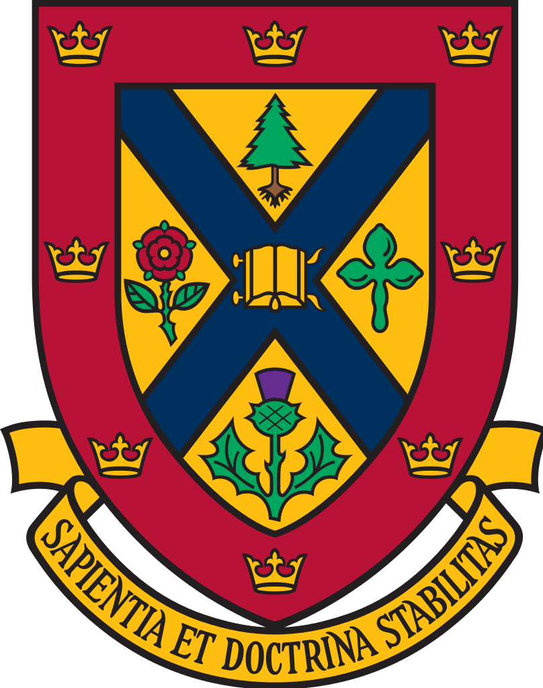
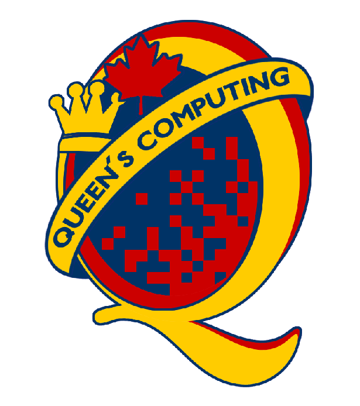
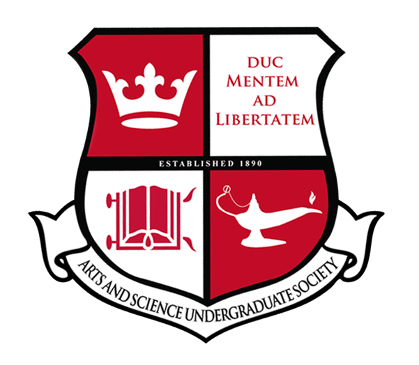
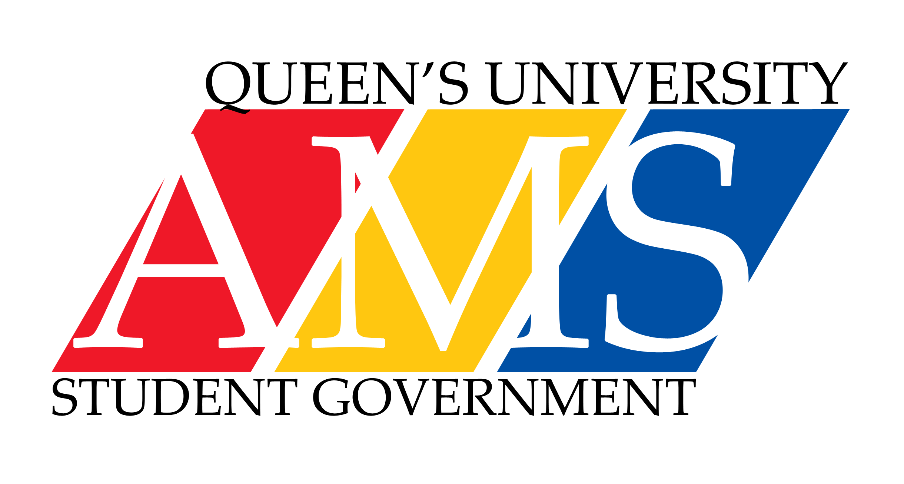
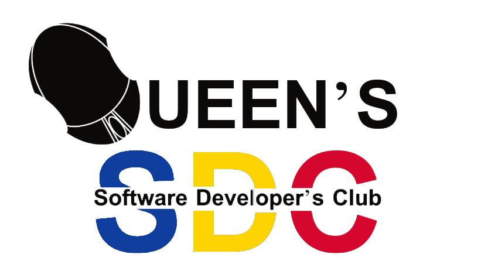
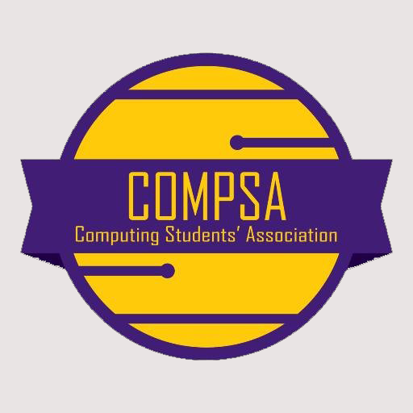
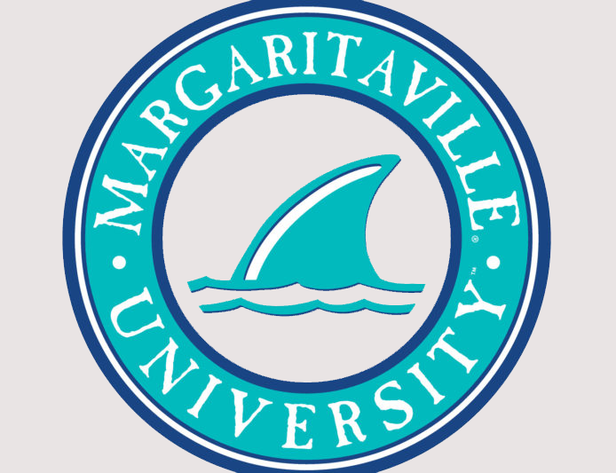

Tiffany Chan 2018
Education

Queen's University
Computer Science, BSc specialization Software Design
Sept 2015 - Present
Kingston, ON
Relevant Coursework:
Relevent Work Experience

Queen's University School of Computing
Teaching Assistant
Dec 2017 - Present
Kingston, ON

Queen's University Arts and Science Undergraduate Society
Computing Peer Tutor
Sept 2017 - Present
Kingston, ON
Courses Tutored:
Loyalist Township Information Technology Student
May 2017 - Aug 2017
Odessa, ON

Queen's University AMS Information Technology Staff
Sept 2016 - May 2017
Kingston, ON
Leadership and Extra curriculars

Queen's University Software Developer's Club
Hackathon Director
May 2017 - Present
Kingston, ON
Queen's University School of Computing
Student Ambassador
July 2017 - Present
Kingston, ON

Queen's University Computing Student Association
Formal Convenor
May 2017 - Present
Kingston, ON
Queen's Computing Orientation Executive Committee
Sponsorship Coordinator
Sept 2016 - Sept 2017
Kingston, ON

Margaritaville
University Student Ambassador
May 2017 - Present
Kingston, ON
Fruit Smash
October 2017
Plant.tv
November 2017
QBASIC
September - November 2017
St. John's Ambulance App
February 2016
Tiffany Chan 2018